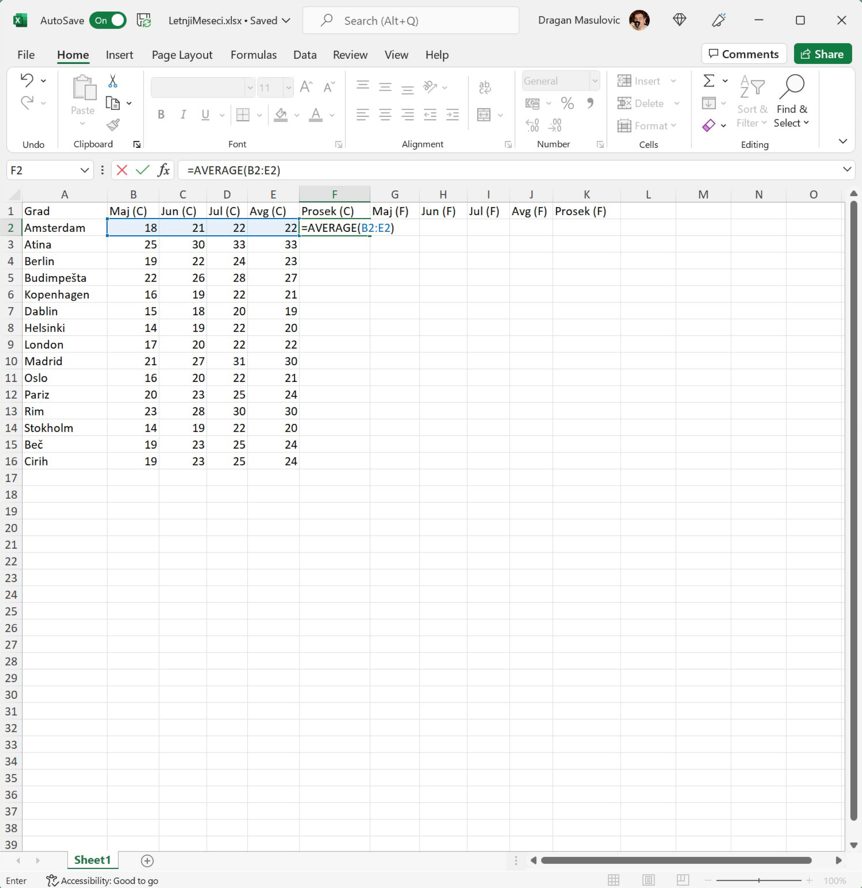
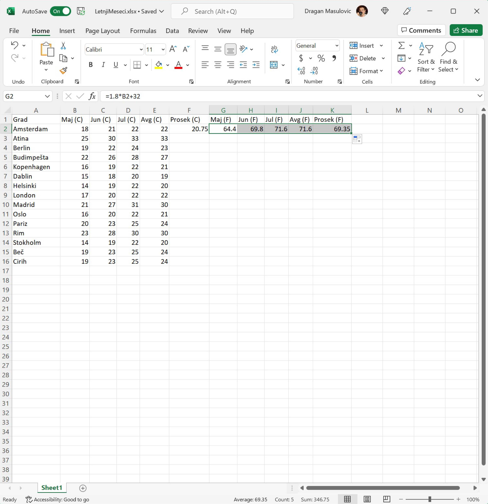
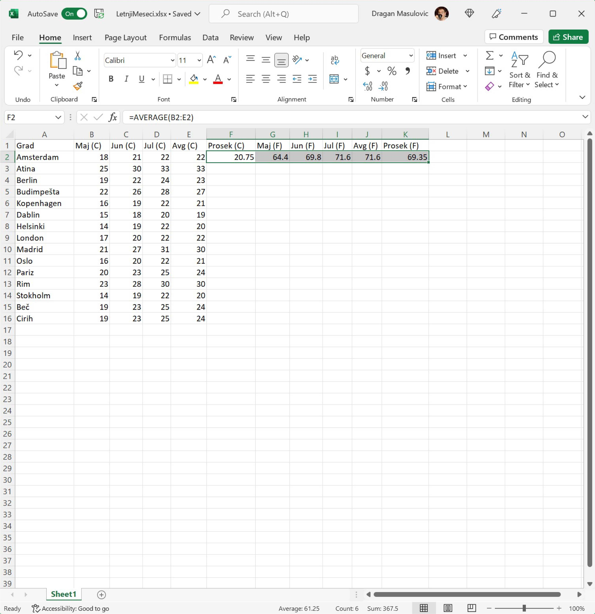
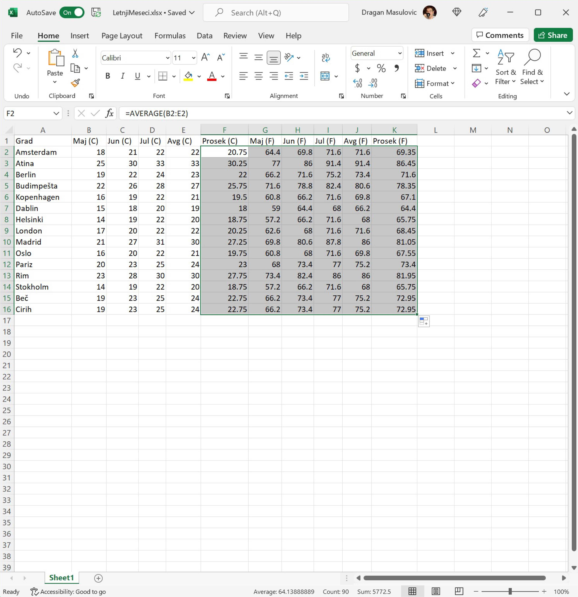
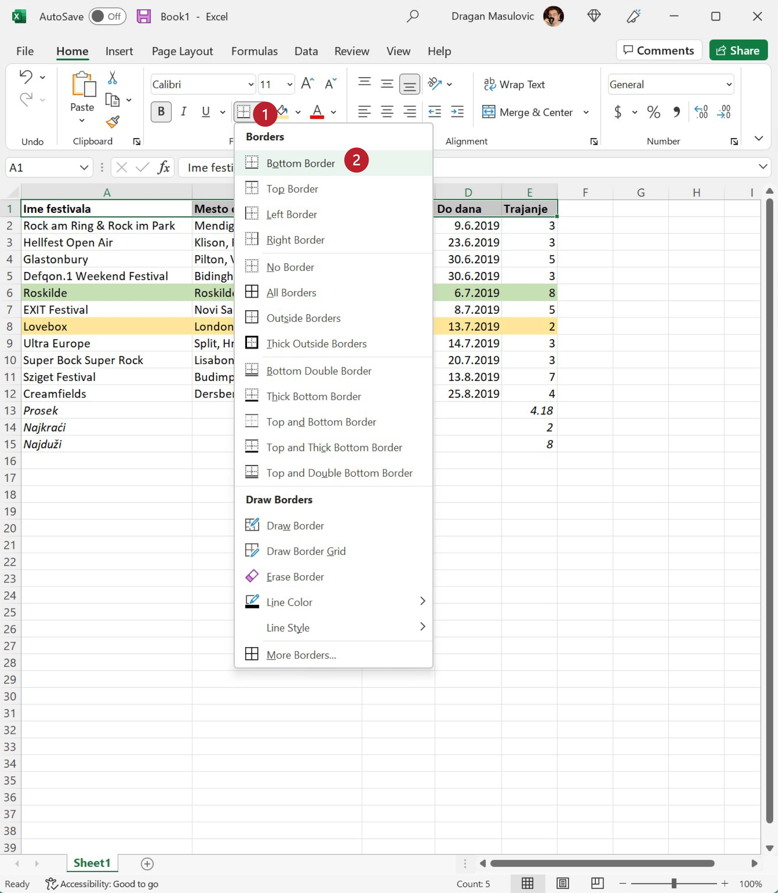
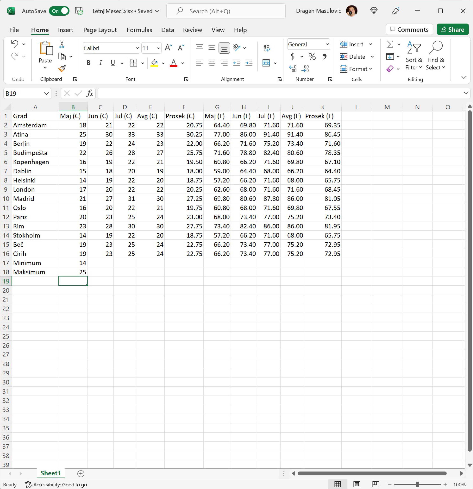
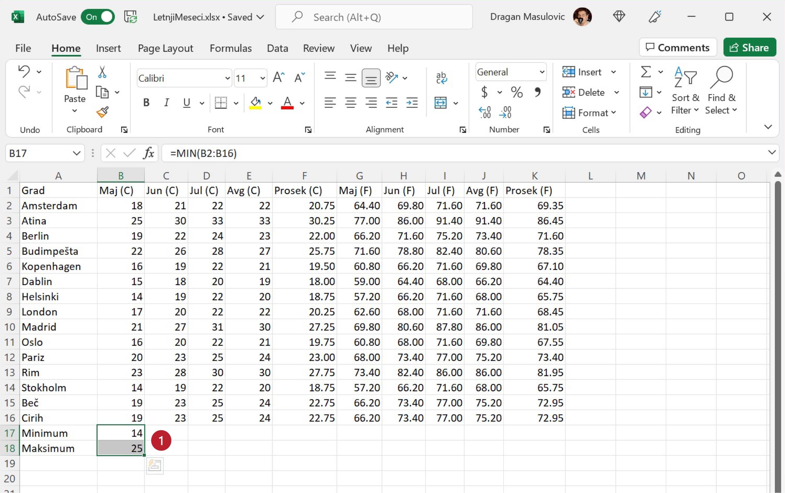
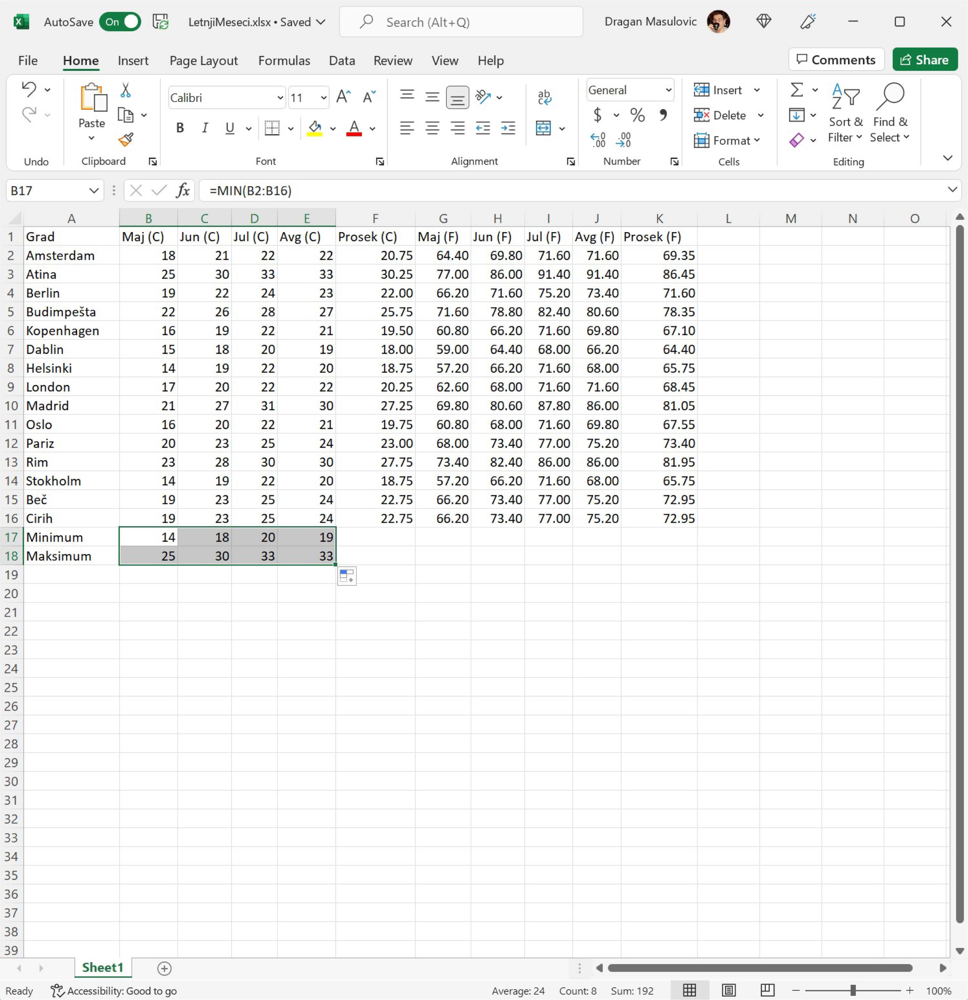
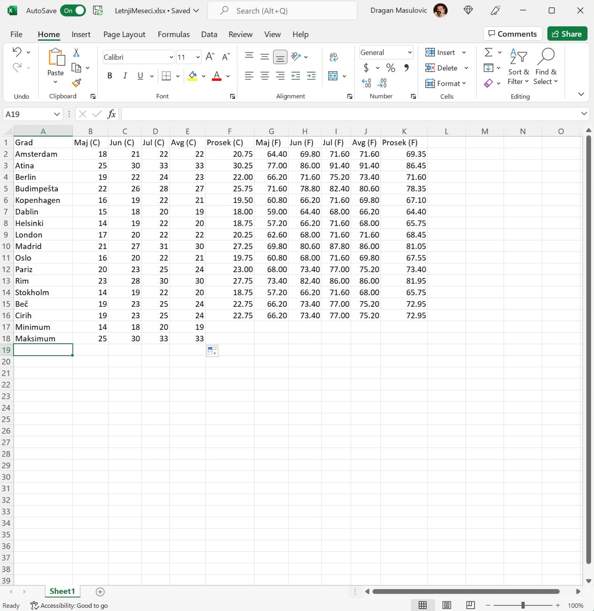

Селектовање групе ћелија и уређивање табеле¶
Теме за овај час:
уношење формула и брзо копирање (подсећање и мала новина),
селектовање групе ћелија,
приказивање бројева са датим бројем децимала,
промена боје ћелије, као и боје и стила текста.
Пример: Летњи месеци¶
У табели испод су дате очекиване температуре у степенима Целзијуса у неким европским градовима у мају, јуну, јулу и августу једне године. Прерачунаћемо те податке у степене Фаренхајта, за сваки град одредити просек за четири наведена месеца, и одредићемо најтоплије и најхладније градове по месецима.
Корак 1. Преузми табелу са следећег линка LetnjiMeseci.xlsx тако што ћеш кликнути на линк десним тастером миша и онда у малом менију који се појави одабрати опцију „Save link as…”. Када отвориш табелу из Ексела треба да видиш следеће податке:

Уношење формула и брзо копирање¶
Корак 2. У ћелију F2 унеси формулу
=AVERAGE(B2:E2)
која ће израчунати просечну температуру за ова четири месеца у Амстердаму:
{kind=link}
и притисни [ENTER]:

Корак 3. Сада ћемо у ћелију G2 да унесемо формулу која ће прерачунати температуру у мају у Амстердаму из степена Целзијуса у степене Фаренхајта по формули
Приликом уношења формуле морамо повести рачуна о томе да се множење означава звездицом *:
{kind=link}
Корак 4. Исти посао треба урадити за јун, јул, август и за просек. Можемо исту формулу унети још четири пута, али је боље да се послужимо брзим копирањем. Ако кликнемо на ћелију G2 видећемо увек присутну „бубуљицу” у доњем десном углу:

Ухватимо „бубуљицу”, развучемо до краја врсте и добијамо:
{kind=link}
Формула у ћелији G2 је гласила
= 1.8 * B2 + 32
Ако погледамо шта пише у ћелији H2 видећемо да тамо стоји формула
= 1.8 * C2 + 32
Као и раније, на основу формуле која је била уписана у ћелију G2 Ексел је простим алгоритмом генерисао формуле и уписао их редом у све ћелије кроз које смо „развукли оквир”. Међутим, пошто смо овај пут „оквир развукли” хоризонтално Ексел је применио други алгоритам: сада се слова у адреси ћелије редом повећавају, а бројеви у адреси ћелије се не мењају. Ево и табеларног прегледа:
Ћелија |
Формула |
|---|---|
G2 |
= 1.8 * B2 + 32 |
H2 |
= 1.8 * C2 + 32 |
I2 |
= 1.8 * D2 + 32 |
J2 |
= 1.8 * E2 + 32 |
K2 |
= 1.8 * F2 + 32 |
Дакле, брзо копрање ради на један начин када оквир „развлачимо” вертикално, а на други начин када га „развлачимо” хоризонтално. Поента је да се у сваком случају „чува логика формуле”.
Селектовање групе ћелија¶
До сада смо попунили тек први ред табеле. Уместо да све ове кораке понављамо за сваки ред табеле посебно, послужићемо се још једним лукавством. Означићемо низ ћелија (ова операција се у жаргону зове „селектовање” од енгл. select што значи „одабрати”) и онда ћемо брзим копирањем попунити све ћелије у табели.
Корак 5. Пошто смо попунили први ред табеле, означићемо (такорећи селектоваћемо) низ ћелија F2:K2 тако што ћемо кликнути на ћелију F2 (дакле, НЕ на „бубуљицу” већ у срце ћелије F2) и не пуштајући миша развући оквир до ћелије K2:
{kind=link}
Овим смо означили ћелије које су интересантне (јер садрже формуле које желимо да размножимо по целој табели).
Корак 6. Е, сада ухватимо за „бубуљицу” која се налази у доњем десном углу означеног распона и „развучемо” до дна табеле:

Ексел је ископирао формуле које су се налазиле у означеним ћелијама и током копирања сваку формулу прилагодио позицији на којој се она налази. На пример, ако погледамо ћелију J11 (температура у степенима Фаренхајта у Ослу у августу) видећемо да је та вредност израчуната тако што је формула за конверзију примењена на ћелију E11 (температура у степенима Целзијуса у Ослу у августу), као што и треба:
{kind=link}
Тако је овај део задатка решен.
Ево и демонстрације:

Форматирање децималних бројева¶
Корак 7. У табели сада има много децималних бројева. Неки немају децимале, неки имају само једну децималу, а неки две и табела изгледа доста неуредно.
Да би табела са много бројева (а такве су најчешће када се ради са Екселом) била прегледнија обично се Екселу наложи да бројеве са децималама приказује са унапред задатим бројем децимала, рецимо две. У том случају ће број као што је 42 бити приказан као 42.00, број 21.5 као 21.50, а број 3.1415 као 3.14.
За подешавање приказа бројева у табели користимо групу команди „Number”:

Да бисмо објаснили Екселу у ком делу табеле бројеве треба приказати са задатим бројем децимала, селектоваћемо део табеле као у претходном кораку, с тим да ће овај пут селектовани део табеле имати више врста и колона.
Кликни мишем на ћелију F2 и не пуштајући леви тастер на мишу развуци оквир до ћелије K16 овако:
{kind=link}
Кликни на стрелицу поред „General” и у менију који се појави одабери „Number”:
{kind=link}
Сви бројеви у селектованом делу табеле ће бити приказани са две децимале.

Ево и демонстрације:
Приказивање бројева са две децимале је најчешћи захтев који корисници Ексела имају, и зато је подразумевано да ће Ексел приказати бројеве на две децимале. Ако из неких разлога желимо да прикажемо бројеве са три децимална места, или само једним, треба кликнути на стрелицу поред „General”, па уместо „Number” одабрати „More Number Formats…” („још формата бројева”):

и у прозору који се појавио унети жељени број децимала:

Ево и демонстрације:
Рачунање минимума и максимума¶
Корак 8. Сада ћемо научити како да одредимо најхладнији и најтоплији град по месецима. У ћелију А17 упиши „Minimum”, а у ћелију A18 упиши „Maksimum”:
{kind=link}
Корак 9. У ћелију B17 упиши следећу формулу:
= MIN(B2:B16)
Ова формула ће израчунати најмањи (MIN) од бројева B2, B3, …, B16 (B2:B16) и ту вредност уписати у ћелију B17:
{kind=link}
Корак 10. Онда у ћелију B18 упиши формулу:
= MAX(B2:B16)
Ова формула ће израчунати највећи (MAX) од бројева B2, B3, …, B16 (B2:B16) и ту вредност уписати у ћелију B18:
{kind=link}
Тако смо добили најнижу и највижу температуру у мају:
{kind=link}
Корак 11. Да бисмо то исто урадили за јун, јул и август полсужићемо се комбинацијом трикова које смо научили – селектоваћемо ћелије B17 и B18:
{kind=link}
па ћемо „ухватити за бубуљицу” и развући селекцију до колоне Е:
{kind=link}
Тако смо добили најниже и највише температуре које су постигнуте у ова четири месеца:
{kind=link}
Уређивање табеле¶
Табела сада садржи све податке које смо желели у њу да спакујемо, али је доста непрегледна. Ми, људи, нисмо добри у тумачењу велике количине бројева – много боље нам иду слике. Зато ћемо мало улепшати табелу како бисмо истакли оно што смо уочили и како бисмо раздвојили различите врсте података.
За истицање елемената у табели користимо сегмент команди које се налазе у групи „Font”:

Команде представљене иконама у овој групи већ познајеш:
{kind=link}
Корак 12. Постави боју слова у заглављу табеле (ћелије А1:К1) на бело, а боју позадине ћелија на тамно сиво тако што ћеш
селектовати ћелије А1:К1
кликнути на стрелицу поред иконе за подешавање боје слова и одабрати белу боју, и
кликнути на стрелицу поред иконе за подешавање боје позадине ћелије и одабрати тамно сиву.

Корак 13. За слова у ћелијама А17:Е18 (минималне и максималне температуре):
као стил одабери B (енгл. bold што значи „подебљано”),
зеленом обој слова која одговарају минималним температурама, а
црвеном обој слова која одговарају максималним температурама.
{kind=link}
Корак 14. Позадину ћелија које одговарају просечним температурама (F2:F16 и K2:K16) обој жуто:

Корак 15. Температуре које су исказане у степенима Фаренхајта (ћелије G2:J16) обој светло плаво:

Ево и кратке демонстрације:
Корак 16. Коначно, у делу табеле B2:E16 где су температуре исказане у степенима Целзијуса
обој светло зелено позадину сваке ћелије која садржи температуру која је минимална за тај месец, и
обој светло црвено позадину сваке ћелије која садржи температуру која је максимална за тај месец.
Треба да добијеш:

Шта закљућујеш гледајући само у боје ћелија?
Задаци¶
Задатак 1. Са следећег линка Razred.xlsx преузми документ Razred.xlsx и сними га на свој рачунар. Документ садржи податке о оценама из информатике неких ученика.
Колоне „P1” „P2” и „P3” садрже оцене са првог, другог и трећег писменог задатка. У ћелијама E19, J19, M19 израчунај просечну оцену одговарајућег писменог задатка.
Прикажи просек оцена на две децимале. Прошири колоне да би се виделе децимале.
У колонама „P1” „P2” и „P3” обој слова црвеном и постави стил на bold.
За сваког ученика у колони „Prosek” израчунај просек његових оцена и прикажи просек на две децимале.
У колони „Zaokruženo” заокружи оцену сваког ученика на цео броj користећи функцију
ROUND. На пример, за првог ученика у ћелију Q2 унеси формулу=ROUND(P2,0)која број из ћелије „P2” заокружује на 0 децимала (дакле, на цео број). Онда „развуци” формулу до краја табеле. Прошири колону ако је потребно.У колони „Maks ocena” за сваког ученика израчунај максималну оцену која је том ученику уписана у дневник.
Позадину ћелија у колони „Zaokruženo” обој плавом, а позадину ћелија у колони „Maks ocena” наранџастом.
Сними табелу.
Задатак 2. Ученици једног разреда су скакали у даљ. Сваки ученик је имао три покуашаја. У случају преступа податак није унет у табелу. Са следећег линка SkokUDalj.xlsx преузми документ SkokUDalj.xlsx и сними га на свој рачунар.
Прошири колоне ако је потребно да би се садржај лепо видео.
За сваког ученика у табели израчунај просечну дужину његових покушаја.
За сваког ученика у табели израчунај дужину његовог најдужег скока.
Црвеном обој име сваког ученика који је начинио бар један преступ.
Нека стил слова у колони која садржи просечну дужину скока буде italic.
Нека стил слова у колони која садржи максималну дужину скока буде bold.
Сними табелу.